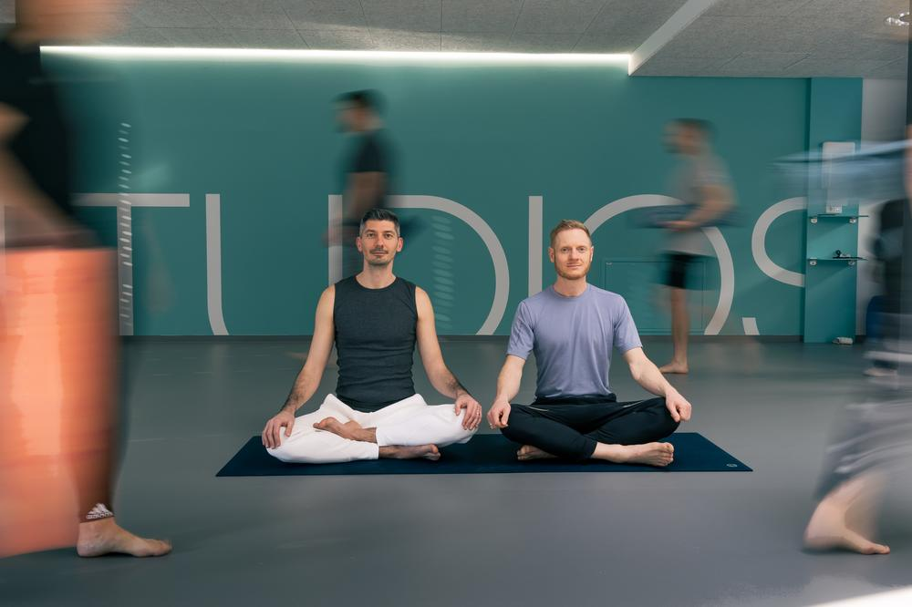
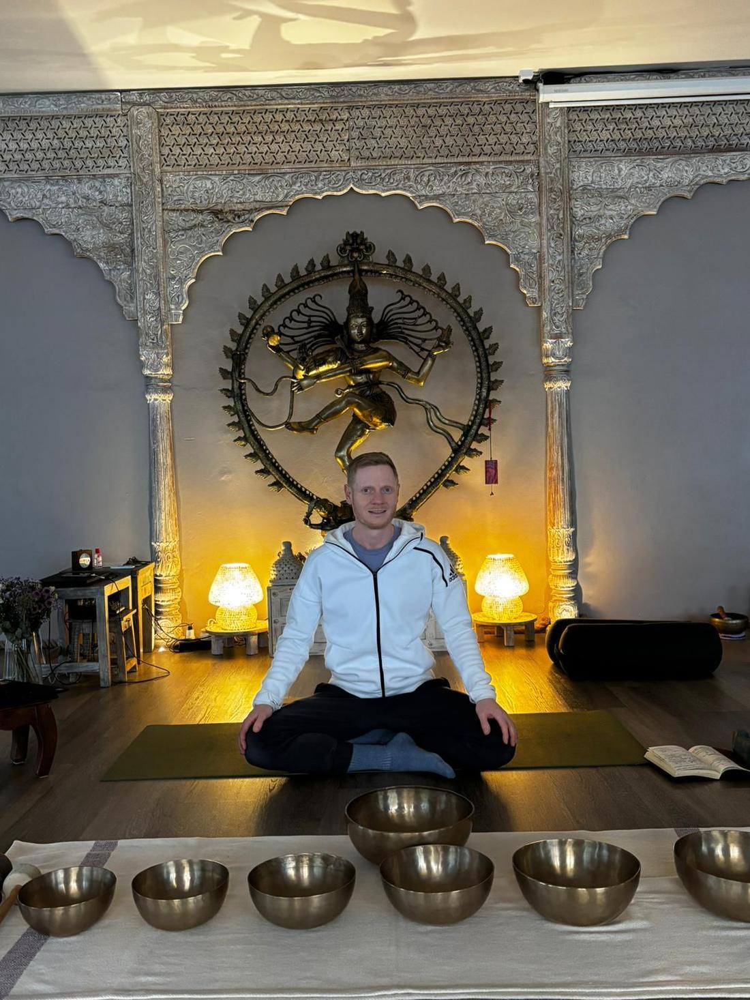

Bewegung
Yoga-Flows
Von der sanften „Slow Flow Morning Yoga" über die energiegeladene „Energizing Yoga"-Einheit bis zum „Winter Wake-Up Yoga" am Abreisetag — die Flows sind das aktive Rückgrat des Programms, geleitet von Chris & Vlad.
- Für alle Level geeignet, auch ohne Vorerfahrung
- Morgens meist aktiver, abends ruhiger getaktet
- Kein Wettbewerb — die Praxis passt sich der Gruppe an

Regeneration
Yin & Restorative Yoga
Der ruhige Gegenpol zu den aktiven Flows: Bei „Yin Yoga & Sound Bath" am Anreisetag und der „Restorative Yoga & Sound Bath Experience" am Samstag werden Positionen lange und passiv gehalten — unterstützt durch Klang.
- Sanfte Dehnung statt Anstrengung
- Kombiniert mit Klangschalen-Begleitung
- Ideal zum Runterkommen nach der Anreise

Chris' Signature
Sound Healing
Christians Spezialgebiet: 1:1- und Gruppen-Sound-Healing mit tibetischen Klangschalen und Gongs. Die Gruppen-Sessions sind fix im Programm enthalten (u. a. beim „Sleep Easy"-Kerzenschein-Ritual am Anreisetag).
- Gruppen-Sound-Healing im Programm inklusive
- Optional: 1:1- oder Paar-Session, Fr & Sa 12:30 Uhr (+50 €, nach Anmeldung)

Erholung
Spa & Sauna
In der freien Zeit steht euch das Monasterium Spa mit Sauna- und Ruhebereich offen — der perfekte Ausgleich zwischen den Programmpunkten.

Genuss
Kulinarik
Großes Frühstücksbuffet und 3-Gänge-Abendessen im Restaurant Culinaro sind im Preis inbegriffen — inklusive Wasser am Tisch. Die Mönchsküche sorgt für einen besonderen Rahmen an ausgewählten Abenden.

Extra
Weihnachtsmarkt & Mystery Event
Freitag und Samstag ist jeweils Zeit für einen optionalen Abstecher zum Weihnachtsmarkt direkt beim Hotel. Und am Freitagabend wartet das kostenlose Mystery Event — was genau passiert, bleibt bewusst eine Überraschung.